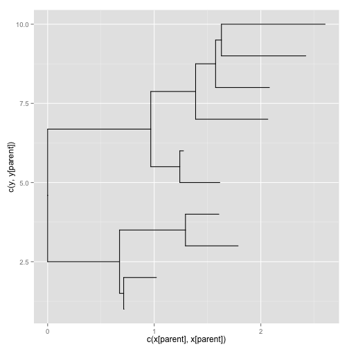
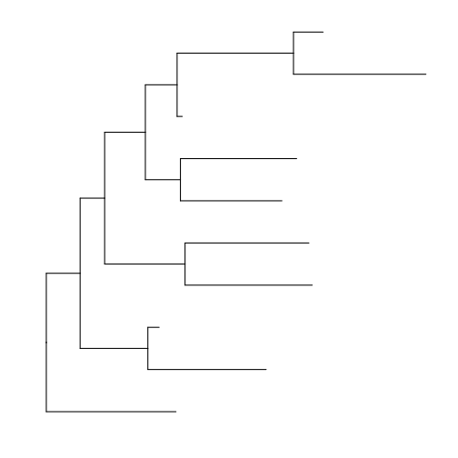
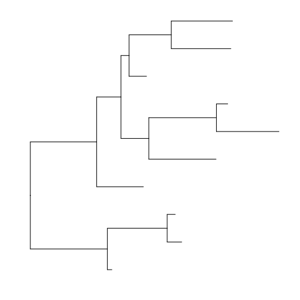

ggtree: a phylogenetic tree viewer for different types of tree annotations
系統樹を描画するためのパッケージ

- Bioconductor: http://www.bioconductor.org/packages/release/bioc/html/ggtree.html
- GitHub: https://github.com/GuangchuangYu/ggtree
> library(ggtree)
Attaching package: 'ggtree'
The following object is masked from 'package:tidyr':
expand
The following object is masked from 'package:dplyr':
collapse
The following object is masked from 'package:ggvis':
add_legend
バージョン: 1.1.7
| 関数名 | 概略 |
|---|---|
%<% |
%<% |
%<+% |
%<+% |
. |
. |
NJ |
NJ |
aes |
creates a lists of unevaluated expressions |
as.binary |
as.binary |
as.data.frame.phylo |
as.data.frame |
beast-class |
Class "beast" This class stores information of beast output |
codeml-class |
Class "codeml" This class stores information of output from codeml |
codeml_mlc-class |
Class "codeml_mlc" This class stores information of mlc file frm codeml output |
fortify.phylo |
fortify |
geom_aline |
geom_aline |
geom_text |
text annotations |
geom_tiplab |
geom_tiplab |
geom_tippoint |
geom_tippoint |
geom_tree |
geom_tree |
get.fields |
get.fields method |
get.offspring.tip |
get.offspring.tip |
get.placements |
get.placements method |
get.subs |
get.subs method |
get.tipseq |
get.tipseq method |
get.tree |
get.tree method |
get.treeinfo |
get.treeinfo method |
get.treetext |
get.treetext method |
ggplotGrob |
generate a ggplot2 plot grob |
ggtree |
visualizing phylogenetic tree and heterogenous associated data based on grammar of graphics 'ggtree' provides functions for visualizing |
phylogenetic |
tree and its associated data in R. |
gplot |
gplot |
groupOTU |
groupOTU method |
groupOTU.phylo |
groupOTU.phylo |
gzoom |
gzoom |
hyphy-class |
Class "hyphy" This class stores information of HYPHY output |
jplace-class |
Class "jplace" This class stores information of jplace file. |
paml_rst-class |
Class "paml_rst" This class stores information of rst file from PAML output |
plot |
plot method |
read.baseml |
read.baseml |
read.beast |
read.beast |
read.codeml |
read.codeml |
read.codeml_mlc |
read.codeml_mlc |
read.hyphy |
read.hyphy |
read.jplace |
read.jplace |
read.paml_rst |
read.paml_rst |
read.tree |
read newick tree |
rm.singleton.newick |
rm.singleton.newick |
rtree generate |
random tree |
show,beast-method |
show method |
theme_tree |
theme_tree |
theme_tree2 |
theme_tree2 |
write.jplace |
write.jplace |
> library(ape)
geom_tree
ggplot2用の系統樹レイヤー。ggplot()にはphyloクラスのデータを渡す
> rtree(n = 10) %$% ggplot(data = .) + geom_tree()

ggtree
ggplot2風に系統樹を描画
> rtree(10) %>% ggtree(.)

theme_tree
描画用テーマ
Arguments
- bgcolor
- fgcolor
> rtree(10) %>% ggtree(.) + theme_tree(bgcolor = "white", fgcolor = "black")

rtee
ランダムな系統樹データを作成する
ape::rtreeもある
Arguments
- n: 系統樹の先端となる葉の数
- rooted: logical
- tip.label: 葉に使用するラベル
- br
- ...
> rtree(n = 10, rooted = TRUE, tip.label = NULL, br = runif)
Phylogenetic tree with 10 tips and 9 internal nodes.
Tip labels:
t2, t5, t7, t3, t1, t6, ...
Rooted; includes branch lengths.